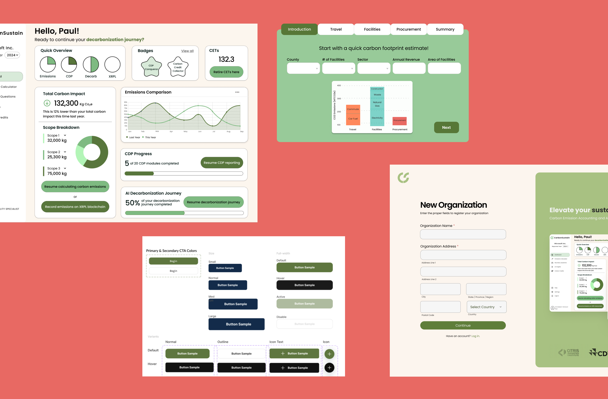
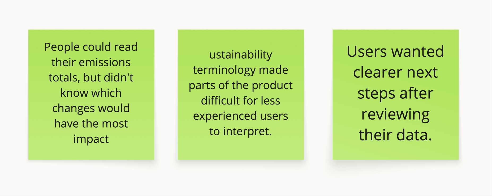
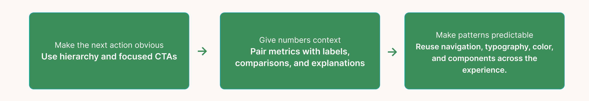
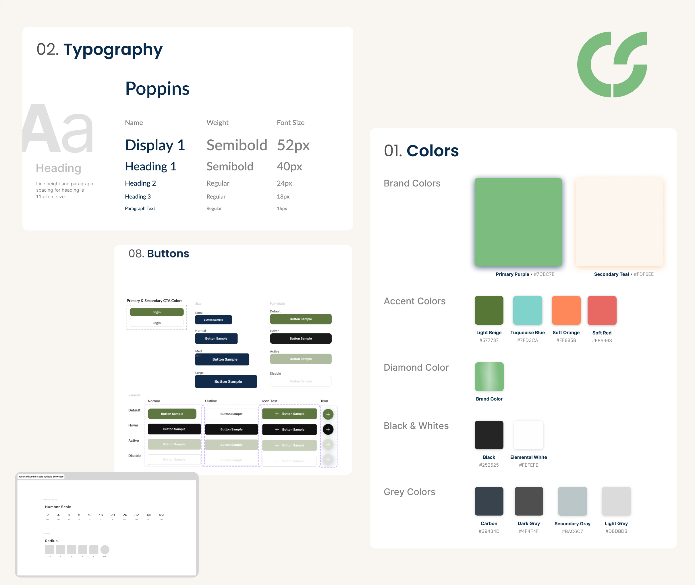
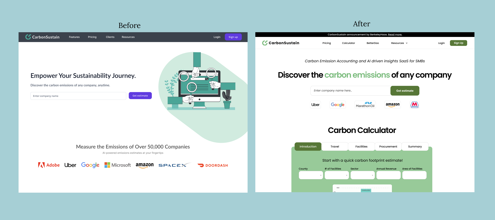
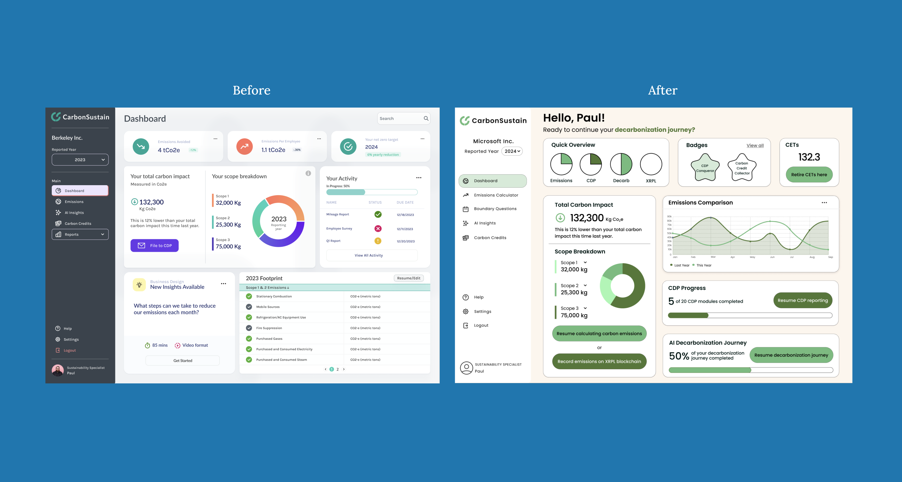

Making complex carbon data easier to understand and act on for businesses.

I redesigned key workflows across Carbon Sustain's analytics platform to help businesses navigate emissions data, understand their impact, and take clearer next steps.
Jump to solution ↓Role
Product Designer
UX Research
Timeline
Sept – Dec 2024
Team
4 Designers
1 Client
Scope
Research
IA
Visual Design
Competitive Auditing
Context
My first client-facing UX project for a B2B carbon analytics platform.
Our team partnered directly with Carbon Sustain's founder to redesign parts of the marketing site and core product. I worked across research, information architecture, interaction design, and visual design.
The Problem
Carbon data was available. Understanding what to do with it wasn't.
Carbon Sustain surfaced detailed emissions information, but the experience made it difficult for non-experts to understand the product's value, navigate key workflows, and interpret complex sustainability data.
Users could see the data, but not what to do next.
Key actions carried the same visual weight as everything around them, so nothing signalled where to start.
Carbon metrics lacked context for non-experts.
Figures were shown on their own, without the labels or comparisons someone outside sustainability would need to judge whether a number was good or bad.
Navigation changed across different parts of the product.
Patterns differed between the marketing site and the product, so each section had to be learned again.
Client Priority
Trust should be the first thing users feel.
Carbon Sustain founder
Research
Users could understand what their emissions were, but struggled to understand what to do next.
I reached out via email and spoke with 5 sustainability professionals across local startups to understand how emissions data was reported, interpreted, and used to make decisions. I paired these conversations with competitive analysis and affinity mapping to identify recurring gaps in the experience.

Design Direction
Research shifted the goal from displaying data to helping people use it.
I focused the redesign around three principles that could scale across both the marketing site and product.

Visual System
Trust needed to carry across the entire product.
I helped turn Carbon Sustain's existing brand into a reusable visual system across the marketing site and dashboard. Consistent type, color, components, and data patterns helped the experience feel like one product rather than a collection of separate screens.

Contrast & legibility
Accessible contrast for key text, controls, and data.
More than color
Labels and values accompany chart colors so meaning doesn't depend on color alone.
Clear hierarchy
Consistent type and spacing make dense dashboards easier to scan.
The Solution
A clearer path from understanding your footprint to acting on it.
The redesign covered the full journey, from understanding Carbon Sustain’s value to calculating emissions and tracking progress over time.
Product Discovery
I brought the carbon calculator into the main journey.
The original landing page asked visitors to enter a company name without clearly explaining what Carbon Sustain would help them do. I clarified the value proposition, made the company lookup more explicit, and brought the carbon calculator into the main journey so visitors could understand the product and start using it from the same page.

Guided Calculation
I broke one large calculation into smaller decisions.
Instead of asking for every emissions input at once, I separated the calculator into travel, facilities, and procurement. As users add information, the visualization updates to show how each category contributes to their footprint.
Carbon Insights
I reorganized the dashboard around what users needed to understand first.
The original dashboard gave several metrics similar visual weight. I put total impact first, followed by where emissions came from, how they were changing, and what users could do next. Labels and comparisons gave the numbers context without relying on color alone.

Outcome
A clearer path from discovering Carbon Sustain to understanding your footprint.
The final experience connected what had previously felt like separate parts of the product. Users could understand what Carbon Sustain offered, calculate their footprint through a guided flow, and interpret their emissions through a consistent dashboard and visual system.
Reflection
The project that taught me how different designing for real users feels.
Carbon Sustain was my first time designing for a real client, and it changed how I thought about the job. I couldn’t make decisions based only on what made the interface cleaner. I had to balance what we heard from users with what the founder wanted the product to communicate and what made sense for the platform.
Looking back, I would have spent more time testing the calculator and dashboard with people at different levels of sustainability expertise. But this was the project where I first learned how to take messy research, turn it into a direction, and carry that thinking through a product.